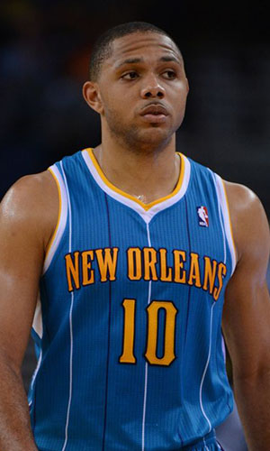

|  |
Матчи |
61 |
|
Передачи (всего/среднее) |
230 |
3.8 |
| В основе |
60 |
|
Подборы в защите (всего/среднее) |
131 |
2.1 |
| Время (всего/среднее) |
2018:07 |
33:05 |
Подборы в атаке (всего/среднее) |
28 |
0.5 |
| Очки (всего/среднее) |
818 |
13.4 |
Подборы (всего/среднее) |
159 |
2.6 |
| 2-очковые броски (всего/среднее) |
144/378 |
2.4/6.2 |
Перехваты (всего/среднее) |
50 |
0.8 |
| 2-очковые броски (% реализации) |
38.1% |
|
Потери (всего/среднее) |
122 |
2 |
| 3-очковые броски (всего/среднее) |
141/315 |
2.3/5.2 |
Блокшоты (всего/среднее) |
14 |
0.2 |
| 3-очковые броски (% реализации) |
44.8% |
|
Блокшоты соперника (всего/среднее) |
36 |
0.5 |
| Штрафные броски (всего/среднее) |
107/133 |
1.8/2.2 |
Фолы (всего/среднее) |
145 |
2.4 |
| Эрик Гордон |
Штрафные броски (% реализации) |
80.5% |
|
Коэффициент полезности (всего/среднее) |
529 |
8.7 |